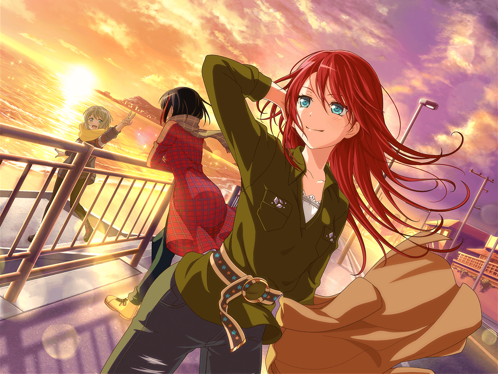

ショッピングモール 本屋
ひまり
ありがとね、付き合ってもらっちゃって。
もう欲しい雑誌は決まってるからすぐ買ってきちゃうね
ひまり
あれ……？
あーっ！ この写真集！
ずっと売り切れだったけどやっと入荷したんだ～！
つぐみ
これは……モデルさんの写真集？
ひまり
うん、元々はこのファッション誌の読者モデルだったんだけど、
去年、専属になったんだよー！
ひまり
このモデルさんほんっとスタイルいいし顔ちっちゃいし
コーデうまいし、すっごく憧れてるの！
ひまり
ほらほら見てー！
この着こなし、すっごくかわいくない？
巴
お、ホントだ。それに、ひまりっぽいコーデだな。
ひまりが憧れてるだけあるな
ひまり
でしょでしょー？ ……ってことでー、
この写真集も買っちゃおうかな！
あ、でもこっちの雑誌の特集も捨てがたい……！
巴
両方買わないのか？
ひまり
２冊買う余裕はないんだよね……ん〜、どうしよ……
巴
まだまだ時間かかりそうだし……アタシ達は
立ち読みでもしてるか
つぐみ
うん、そうしよっか
巴
お、この写真集……
つぐみ
世界遺産の写真集？
へえ〜！ 気になるね！ 表紙も雰囲気があっていいなあ
巴
そうなんだよ！ つぐ、このよさがわかるか！？
巴
有名な世界遺産の写真なんだけど、
構図の切り取り方とか、表現方法が結構面白くてさ。
他の写真集とはちょっと違うんだよな〜
つぐみ
確かに写真のこと、あんまりわからない私でも
他と違う雰囲気がするのはわかるよ！ この写真とか！
巴
だろ？ わかってもらえて嬉しいよ！
この写真集、シリーズ物でさ
毎年、世界遺産に登録されたところを撮影してるんだ
巴
ちなみに、この写真集のお気に入りは
モンサンミッシェルなんだ
つぐみ
ええっと……モンサンミッシェルって
修道院だったっけ？
ひまり
ミッシェル？ ハロハピの話？
巴
違うって。
フランスの小島にある修道院だよ。ていうか、いいから
ひまりは雑誌どれ買うのか早く決めろって
ひまり
はーい……
巴
……あのひまりの様子じゃ
写真集１冊、立ち読みができそうだな
つぐみ
ふふ、そうだね
巴
あ、つぐ！ この写真、見てくれ！
この、神聖な修道院なのにどこか闇を感じるような雰囲気……
影の落ち方に物語を感じないか？
つぐみ
ホントだ！ 影の落ち方が独特でおもしろいね。
巴ちゃんのこういうのを見つけられるセンス、素敵だな〜……
巴
そ、そうか……？
いやあ、それほどでも……ホントは、実際この場所に行けたら
いいんだけどな
つぐみ
写真で見るのと、実物で見るのとでは
また違いそうだよね
巴
だよな？
いつかは、こことか、家にある写真集の場所に
行けたらなって思ってるんだけどな。なかなかな〜……
巴
ん……？ この写真……
つぐみ
わあ、キレイな海の写真だね！
これは、どこの国？
巴
いや、これは日本みたいだ。場所は……井ノ島？
つぐみ
井ノ島って、私達が住んでるところからも
そんなに遠くないよね？ こんなにキレイなんだ〜！
巴
だな。海も夕焼けも……街並みの雰囲気もいいな
巴
決めた！ アタシ、これ買うよ
ひまり
え！？ どうしよう、私まだ決められてないよ〜！
巴
はは。なんとなくこの写真集がピンときてさ。
ひまりはゆっくり悩んでてくれていいから
ひまり
つ、つぐ〜！ 一緒に考えて〜！
つぐみ
え、ええっ！？ わ、私！？
巴
キレイな夕日……こんな夕日、みんなで見られたら
最高だろうなあ……